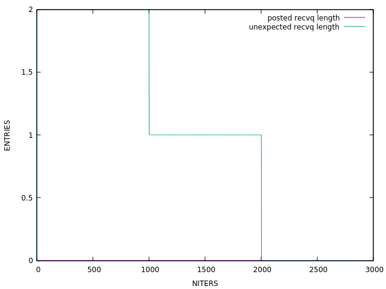
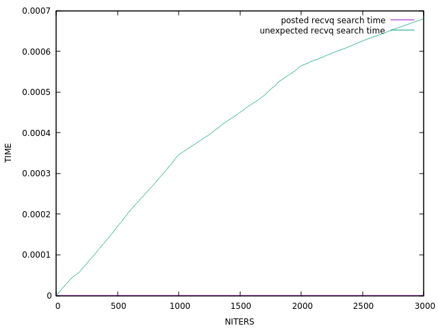
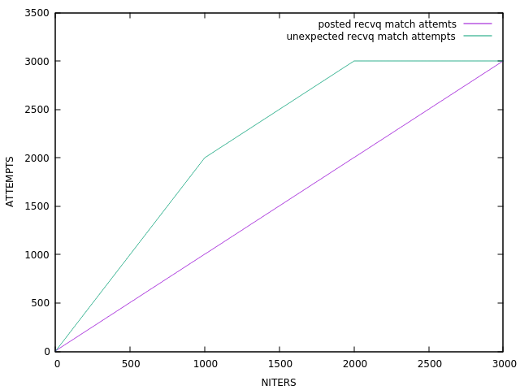

MPI RECVQ Tracker
beta
TASK:
N to 1 (N=3, iters=3000)
DESC:
N processes simultaneously send messages to one receiver process via rendezvous protocol

Elapsed time:
81.9s,
Msg/s:
36.6,
MBytes/s:
0.000349
UMQ allocated buffer size ~>
[0 - 0] avg = 0 (0.000 MBytes)